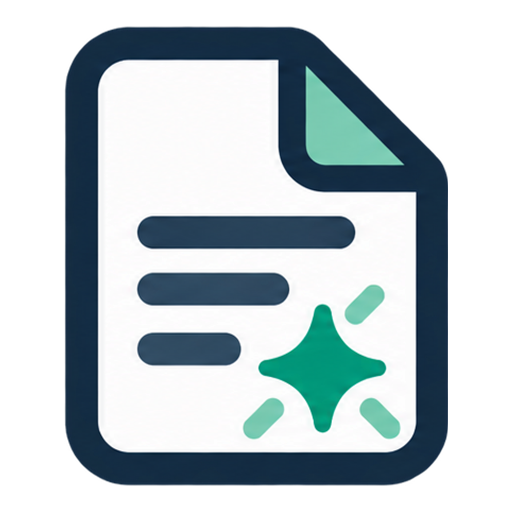

←
Site plan rev C.pdf
↶
↷
Clickable mockup · nothing is saved
Actions
PDF
Site plan rev C.pdf
×
DOCX
Site visit report
×
{{modeName}} ▾
{{m.name}}
{{m.help}}
Ctrl+Shift+E switches between modes
{{t.name}}
Save a copy
Pages
Print
Share
{{tool.name}}
{{g.capText}}
{{g.label}}
{{it.name}}
LESS USED
{{it.name}}
{{namesLabel}}
Need to change the PDF itself? Switch to Build.
WAREHOUSE A · 48,200 SF
GENERAL NOTES
1. Verify dimensions in field.
2. All work per local code.
3. See sheet A-501.
SITE PLAN
Sheet A-101 · Rev C
⠿ drag
{{it.text}}
{{pageHint}}